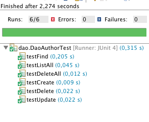

Java EE / Spring
Master e-services 2015
 Spring.
Spring.
The Spring Framework provides a comprehensive programming and configuration model for modern Java-based enterprise applications
Comprenez que Spring est un "couteau suisse" pour faciliter la vie du développeur JAVA, spécialement si il développe pour JAVA EE (mais pas que).
Le coeur de spring c'est, à l'origine, un moteur d'injection de dépendance permettant l'inversion de contrôle du cycle de vie des objets. Mais encore ? Permettre de "repousser" de choix d'implémentation (ou d'instance) d'un objet inclus dans un autre.
Reprenons l'exemple de notre DAO JPA ou Jdbc. Imaginons que le développeur de notre interface ne soit pas le même que celui qui réalise la couche de persistance (donc du DAO). Le développeur de l'interface ne connait pas la classe qui sera utilisée, et d'ailleurs il n'a pas envie de faire new xxxJPADao(), ce qui "casserait" en parti l'abstraction que nous avons essayé de mettre en place. De l'autre coté, le developpeur de notre DAO ne sait pas où et comment son implémentation JPA sera utilisée. Il ne peut pas faire view.setDao( ... )
Heureusement il y a Spring. Dans l'interface on demandera à l'injecteur de dépendance de trouver et d'affecter le DAO, de l'autre on déclarera l'implémentation JPA comme composant DAO à être utilisé. Le tout sera initialisé et affecté au lancement de l'application.
Merci Martin, que ferions-nous sans toi.
pour votre culture générale : Inversion of Control Containers and the Dependency Injection pattern
L'injection de dépendances
Téléchargez cette archive. A extraire quelquepart et à importer dans eclipse.
Ce projet défini des dépendances pour "spring-context" vers M2_REPO que vous devez résoudre avant de commencer à travailler.
Essayez de lancer fr.eservices.sample1.Application. Que se passe-t-il ? Pourquoi ?
Implémentez de manière simple le constructeur de cette classe pour y initialiser les propriétés.
Relancez l'application et vérifiez que cela fonctionne.
Nous aimerions éviter d'avoir à brancher les instances de Greeter, Printer et Welcome.
Supprimez le contenu du constructeur de Application.
Utilisons les annotations @Component et @Autowired pour définir les composants et leurs injections.
Un composant est une instance partagée du contexte spring, selon le pattern "singleton" par défaut.
L'annotation Autowired permet de placer automatiquement une instance du contexte possédant un type compatible.
La lecture de la documentation de référence 5.2 et surtout 5.9 - 5.10 vous serons sans doute d'une aide précieuse.
Dans le main de l'application, créons un "ApplicationContext" pour obtenir une instance de notre objet Application.
Nous utiliserons plus particulièrement le "AnnotationConfigApplicationContext" comme instance d'ApplicationContext. Cette implémentation permet de configurer un context spring à l'aide des annotations que nous avons placés.
Utiliser l'annotation @ComponentScan pour définir la liste des packages que spring devra inspecter pour trouver nos composants.
Relancez l'application est vérifiez que cela fonctionne.
L'intérêt de spring est surtout de réaliser de genre de scénario d'injection lorsque les objets proviennent de librairies différentes, ou lorsque plusieurs implémentation d'une même classe peuvent être utilisés dans l'application.
Regardez le package fr.eservices.sample2 et implémenter le fr.eservices.sample2.appl.Application à l'aide des objets console/english à disposition dans impl. Ils encapsule simplement les objet de sample1...
Il faudra évidemment placer toutes les annotations nécessaire sur ConsolePrinter, ConsoleWelcome, EnglishGreeter et Application.
Vérifiez le fonctionnement.
Utilisons maintenant les objets "Swing" et French.
Ajouter les annotations @Component sur ces objets et relancez l'application.
Que se passe-t-il et pourquoi ?
Ajouter une annotation @Qualifier avec les noms "swing" et "french" sur les objets correspondant.
Vérifier qu'en plaçant les qualifier dans Application cela branche la bonne implémentation.
Essayer de bancher un Welcome console et un Printer Swing, puis vice-versa.
Nous avons utilisé des annotations pour configurer notre contexte spring mais il est possible
d'utiliser des fichiers de configuration en xml. Historiquement, c'est la manière dont on configurait
un contexte spring. Avantage : la configuration du contexte est indépendante du code Java, ce qui évite
de recompiler les classes lors d'un changement de contexte. Inconvénient : le XML c'est assez pénible à
manipuler ...
Selon l'utilisation de votre librairie ou de votre application, il peut être intéressant de prévoir
une configuration par annotation ou par fichier XML.
Installer ce jar dans votre repository maven :
mvn install:install-file -Dfile=check.jar -DgroupId=fr.eservices -DartifactId=code-checker -Dversion=1.6 -Dpackaging=jar
Enfin, pour testez votre projet, placez-vous à la racine du projet puis :
mvn exec:java -Dexec.mainClass="tool.Check" -Dexec.classpathScope=test -Dexec.args="check-spring1"
Félicitation, vous avez compris le fonctionnement de base des beans spring.
Spring MVC
la librairie "MVC" de spring permet d'utiliser les mécanismes d'injection de dépendance pour faciliter le branchement des différentes parties (model, vue, controller) de notre application web tout en assurant une certaine indépendance entre nos objets.
Des annotations complémentaires vont également nous permettre de manipuler facilement
les données provenant de la requête. Par exemple l'annotation @RequestParameter permettra
de copier automatiquement le contenu d'un paramètre dans une variable.
Soit l'équivalent de String param = request.getParameter("paramName")
Spring MVC fourni un objet "RequestDispatcher" qui est une servlet qui va aiguiller toutes les requêtes vers l'un des contrôleurs annotés et présents dans le contexte spring.

(source : documentation spring MVC)
DAO de gestion d'une entité
Nous allons implémenter un DAO avec spring.
Commencez par télécharger cette archive dans votre projet.
Si ce n'est pas déjà fait, modifier votre pom pour configurer maven et compiler à niveau "1.8" de java.
Il faudra ajouter ceci dans votre pom, à l'intérieur de la balise "build" :
<plugins>
<plugin>
<groupId>org.apache.maven.plugins</groupId>
<artifactId>maven-compiler-plugin</artifactId>
<version>3.2</version>
<configuration>
<source>1.8</source>
<target>1.8</target>
</configuration>
</plugin>
</plugins>
J'ai ajouté une classe de tests unitaires pour valider le fonctionnement de votre DAO.
Ajouter le répertoire "WEB-INF/test" à votre pom.xml comme répertoire de source pour les tests.
A ajouter également dans la balise "build".
<testSourceDirectory>WEB-INF/test</testSourceDirectory>
Il nous faudra aussi de nouvelle librairie pour nos tests : junit:junit en version 4.11
Ajouter celle-ci dans les dépendances en scope "test".
Une fois tout cela fait pensez à résoudre les dépendances et à mettre à jour le classpath d'eclipse.
mvn dependency:resolve eclipse:eclipse
Observez la classe "DaoTestConfig". La configuration de l'unité de persistance y est surchargé pour persister la base en mémoire uniquement. Cela permet de travailler de manière indépendante à la base de données qui est utilisé pour faire tourner notre application web. D'autre part l'implémentation mémoire est généralement plus rapide, ce qui permettra à nos tests unitaires de s'exécuter plus vite en plus d'être isolés.

Lancez les tests dans eclipse, implémentez le code du Dao Jpa jusqu'à ce que tous les tests passent.
Cela vous demandera probablement de lire ou relire la documentation de l'Entity Manager et de la manière de construire des requêtes avec JPA. (voir page précédante).
Comme vous pouvez le voir notre DAO et nos tests sont indépendant de l'environnement Web/Servlet.
Contrôleur de gestion d'une entité
Ecrivons maintenant un contrôleur dont le rôle sera de valider quelques règles, et de faire le lien entre les appels à une servlet et notre DAO.
Il nous faudra ajouter la dépendance vers org.springframework:spring-webmvc en version 4.1.2.RELEASE
Ajouter une classe XxxxControl dans le package "impl".
Cette classe possèdera une propriété dao de type XxxxDao.
Ajouter une opération "list" qui prends un "org.springframework.ui.Model" en paramètre et renvoie un "String".
Cette opération appellera le dao pour récupérer la liste d'objets et ajoutera cette liste au model.
L'opération renverra le nom d'une vue, par exemple "xxxxList".
Avec l'aide de la documentation, annotez votre classe pour qu'elle soit utilisée par spring. L'opération list sera branchée sur l'URL "xxxxList.html".
Notez qu'il est aussi possible de tester ce modèle indépendamment du reste.
Il est même possible d'injecter un DAO factice dans notre contrôleur qui renverra toujours la même liste d'objets.
Ainsi, le test unitaire serait simplement de vérifier qu'après l'appel à la fonction "list" le modèle un attribut correctement nommé dans le model et correspondant à la liste de nos objets...
Ce scénario peut évidemment être beaucoup plus abouti si l'on veut vérifier que notre contrôleur respecte certaines règles "métiers" comme ne pas ajouter un objet si une propriété est null ou vide.
Vue liste des entités
Le contexte spring fourni est configuré pour résoudre les noms de vues par des JSP présentes à la racine du projet.
Vous pouvez regarder la classe "impl.AppConfig" et "impl.WebAppInitializer" qui permettent de paramétrer spring sans avoir à écrire de xml.
Cette configuration peut également se faire à l'aide du fichier web.xml, d'un Listener particulier et de fichiers "applicationContext.xml".
Toutes les requêtes à un fichier ".html" sont interceptées par SpringDispatcherServlet.
Regardez et adaptez la jsp fournie si besoin.
Le but est d'afficher dans un tableau HTML toutes les entités d'un même type venant de notre source de données.
Au dessus du tableau un lien amènera vers un formulaire permettant d'ajouter une entité.
Au bout de chaque ligne un lien permettra de supprimer l'entité après une confirmation (javascript).
Un lien permettra de modifier l'entité, le lien sera posé soit sur le nom, soit sur un lien en fin de ligne.
Le formulaire de modification peut être le même que celui de création. Trouvez un moyen de réutilisez ce formulaire.
Lancer tomcat avec les dépendances maven
Notre projet web dépend maintenant de nombreuses dépendances qu'il faudra ajouter dans le classpath de notre contexte web.
Nous pourrions copier à la main chacun des jar disponible dans le "repository" local de maven vers WEB-INF/lib.
Heureusement cette opération fastidieuse peut être réalisée par maven :)
mvn dependency:copy-dependencies -DincludeScope=runtime -DoutputDirectory=WEB-INF/libLancez maintenant tomcat et rendez-vous sur localhost:8080/tp1/xxxxListe.html